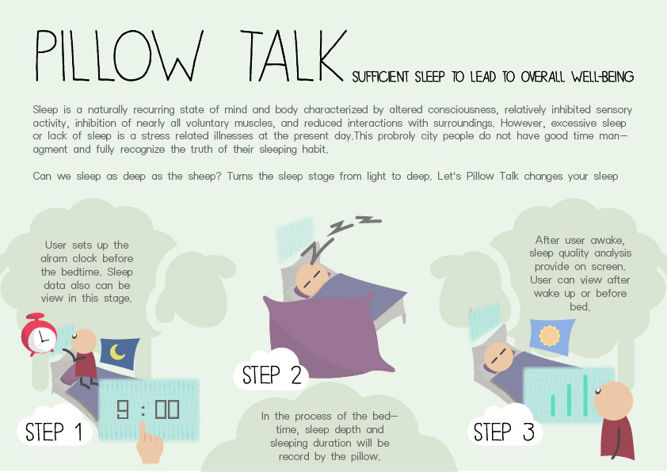
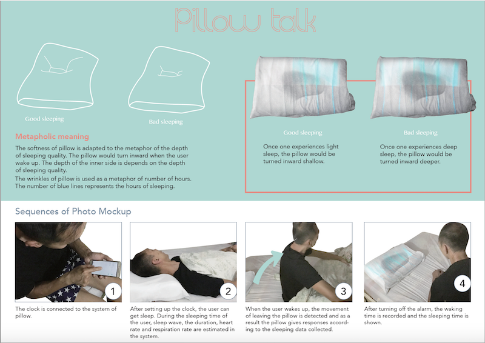

Pillow Talk
The metapholic meaning:
1. Softness of pillow represents the sleeping quality.The pillow turns inward when the user wakes up. The depth of the inner space depends on the depth of sleeping quality.
2. The number of wrinkles of pillow is used to represent number of sleeping hours.Green color means there is sufficient sleeping hours while red color means the user hasn’t pass the standard sleeping hours.
3. Action of smoothing away the wrinkles is adapted as a metaphor of reloading the data again.The hand movement of pulling out seems like restarting things again.
4. Speed of smoothing action represents the recovering of sleeping quality. If it is bad sleep, the user need smooth away wrinkles with slower speed as insufficient sleep needs more time to recover. If it is good sleep, the user can smooth away faster as he/she doesn’t be required to take recovery.

